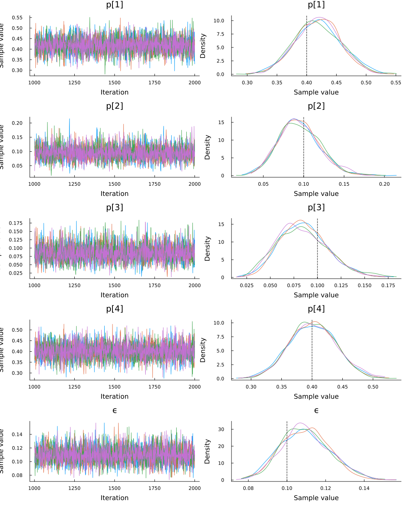
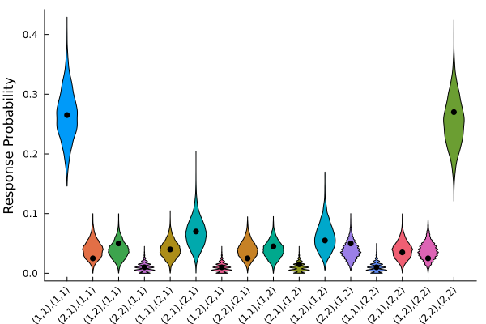

Overview
The purpose of this tutorial is to demonstrate how to develop and apply True and Error Models (TEMs; Birnbaum & Quispe-Torreblanca, 2018) with TrueAndErrorModels.jl. We will cover topics such as model development, Bayesian parameter estimation, and the API.
Full Code
You can reveal copy-and-pastable version of the full code by clicking the ▶ below.
Show Full Code
using FlexiChains
using NamedArrays
using Random
using StatsPlots
using TrueAndErrorModels
using Turing
using TuringUtilities
Random.seed!(6632)
n_options = [2, 2]
n_reps = 2
@make_model MyCoolModel n_options n_reps
dist = MyCoolModel(; p = [0.40, 0.10, 0.10, 0.40], ϵ = fill(0.10, 4))
n_sim = 200
data = rand(dist, n_sim)
to_table(MyCoolModel, data)
@model function tem1_model(data::Vector{<:Integer})
p ~ Dirichlet(fill(1, 4))
ϵ ~ Uniform(0, 0.5)
ϵ′ = fill(ϵ, 4)
data ~ MyCoolModel(; p, ϵ = ϵ′)
return (; p, ϵ = ϵ′)
end
model = tem1_model(data)
chains = sample(model, NUTS(1000, 0.65), MCMCThreads(), 1000, 4)
post_plot = plot(chains, grid = false, leg = false)
vline!(
post_plot,
[missing 0.40 missing 0.10 missing 0.10 missing 0.40 missing 0.10],
color = :black,
linestyle = :dash
)
pred_model = predict_distribution(;
simulator = Θ -> rand(MyCoolModel(; Θ...), n_sim),
model,
func = x -> x ./ sum(x)
)
post_preds = generated_quantities(pred_model, chains)
post_preds = stack(post_preds, dims = 1)
labels = get_response_labels(dist)
violin(
post_preds,
xticks = (1:length(labels), labels),
ylabel = "Response Probability",
leg = false,
grid = false,
xrotation = 45
)
scatter!(1:16, data ./ sum(data), color = :black)Load Packages
The first step is to load the required packages. You will need to install each package in your local environment in order to run the code locally. We will also set a random number generator so that the results are reproducible.
using FlexiChains
using NamedArrays
using Random
using StatsPlots
using TrueAndErrorModels
using Turing
using TuringUtilities
Random.seed!(6632)Random.TaskLocalRNG()Generate Model
Due to the tight coupling between model and experiment, we will describe a simple experimental design and demonstrate how to generate a model programatically with meta-programming.
Experimental Design
As a simple example, we will consider an experiment designed to test expected utility theory (EUT), which is commonly known as the Allias paradox. In this experiment, there are two choice sets, each containing two gambles. The choice sets are denoted as follows:
$\mathcal{C}_1 = \{\mathcal{G}_1,\mathcal{G}_2\}$
and
$\mathcal{C}_2 = \{\mathcal{G}_{1}^{\prime},\mathcal{G}_{2}^{\prime}\}$,
A gamble is denoted as a set of outcome and corresponding probability pairs:
$\mathcal{G} = (x_{1}, p_{1}; \dots; x_{n}, p_{n})$.
The gambles are constructed such that EUT predicts that people will select the corresponding gamble in each choice set. Formally, EUT predicts the following preference relationship for $i,j \in \{1,2\}$, with $i \ne j$:
$\mathcal{G}_i \succ \mathcal{G}_j \Longleftrightarrow \mathcal{G}_{i}^{\prime} \succ \mathcal{G}_{j}^{\prime}$
To estimate the parameters of a TEM, both choice sets must be presented in at least two separate blocks. Filler choice sets are interspersed within each block to ensure that the errors are independent. Below, we create a model matching this experimental design: two choice sets, each with two options, which are repeated twice. We will name this model MyCoolModel to highlight the fact that it is indeed cool.
n_options = [2, 2]
n_reps = 2
@make_model MyCoolModel n_options n_repsResponse Patterns
In this experiment, there are $2^4 = 16$ response patterns formed from two choice sets with two options each, and two presentations of the choice sets. We can generate the response patterns with the function get_response_labels.
get_response_labels(MyCoolModel)16-element Vector{String}:
"(1,1),(1,1)"
"(2,1),(1,1)"
"(1,2),(1,1)"
"(2,2),(1,1)"
"(1,1),(2,1)"
"(2,1),(2,1)"
"(1,2),(2,1)"
"(2,2),(2,1)"
"(1,1),(1,2)"
"(2,1),(1,2)"
"(1,2),(1,2)"
"(2,2),(1,2)"
"(1,1),(2,2)"
"(2,1),(2,2)"
"(1,2),(2,2)"
"(2,2),(2,2)"Response patterns are coded as follows: responses within the same block are grouped by parentheses, numbers correspond to the index of the selected option, and position of the number within the parentheses indicates the choice set. For example, (1,1), (1,2) indicates the first option was chosen in all cases except in the second choice set of the second block where the second option was selected.
Parameters
Most TEMs consist of two types of parameters: true preference parameters and error paramaters, which are organized into corresponding vectors. The true preference vector is defined as:
$\mathbf{p} = \left[p_{11},p_{21},p_{12},p_{22} \right],$
where $\sum_{i \in \mathcal{I}} p_i = 1$ and $p_i \geq 0, \forall i$. Subscripts $ij$ indicate preference for option $i$ in the first choice set and preference for option $j$ in the second choice set.
Similarly, the error parameters are defined as:
$\boldsymbol{\epsilon} = \left[\epsilon_{21},\epsilon_{11},\epsilon_{22},\epsilon_{12} \right],$
where $\epsilon_{ka}$ is the probability of erroneously selecting option $k$ from the $a$th choice set.
Model Equations
You can view the model equations by calling get_equations and passing MyCoolModel or a model object of that type. The model equations are organized according to the response patterns above. The corresponding response pattern is shown above each equation.
show_equations(MyCoolModel)response pattern: ((1, 1), (1, 1))
θ[1] = p₁₁ ⋅ (1 - ϵ₂₁) ⋅ (1 - ϵ₂₂) ⋅ (1 - ϵ₂₁) ⋅ (1 - ϵ₂₂) +
p₂₁ ⋅ ϵ₁₁ ⋅ (1 - ϵ₂₂) ⋅ ϵ₁₁ ⋅ (1 - ϵ₂₂) +
p₁₂ ⋅ (1 - ϵ₂₁) ⋅ ϵ₁₂ ⋅ (1 - ϵ₂₁) ⋅ ϵ₁₂ +
p₂₂ ⋅ ϵ₁₁ ⋅ ϵ₁₂ ⋅ ϵ₁₁ ⋅ ϵ₁₂
response pattern: ((2, 1), (1, 1))
θ[2] = p₁₁ ⋅ ϵ₂₁ ⋅ (1 - ϵ₂₂) ⋅ (1 - ϵ₂₁) ⋅ (1 - ϵ₂₂) +
p₂₁ ⋅ (1 - ϵ₁₁) ⋅ (1 - ϵ₂₂) ⋅ ϵ₁₁ ⋅ (1 - ϵ₂₂) +
p₁₂ ⋅ ϵ₂₁ ⋅ ϵ₁₂ ⋅ (1 - ϵ₂₁) ⋅ ϵ₁₂ +
p₂₂ ⋅ (1 - ϵ₁₁) ⋅ ϵ₁₂ ⋅ ϵ₁₁ ⋅ ϵ₁₂
response pattern: ((1, 2), (1, 1))
θ[3] = p₁₁ ⋅ (1 - ϵ₂₁) ⋅ ϵ₂₂ ⋅ (1 - ϵ₂₁) ⋅ (1 - ϵ₂₂) +
p₂₁ ⋅ ϵ₁₁ ⋅ ϵ₂₂ ⋅ ϵ₁₁ ⋅ (1 - ϵ₂₂) +
p₁₂ ⋅ (1 - ϵ₂₁) ⋅ (1 - ϵ₁₂) ⋅ (1 - ϵ₂₁) ⋅ ϵ₁₂ +
p₂₂ ⋅ ϵ₁₁ ⋅ (1 - ϵ₁₂) ⋅ ϵ₁₁ ⋅ ϵ₁₂
response pattern: ((2, 2), (1, 1))
θ[4] = p₁₁ ⋅ ϵ₂₁ ⋅ ϵ₂₂ ⋅ (1 - ϵ₂₁) ⋅ (1 - ϵ₂₂) +
p₂₁ ⋅ (1 - ϵ₁₁) ⋅ ϵ₂₂ ⋅ ϵ₁₁ ⋅ (1 - ϵ₂₂) +
p₁₂ ⋅ ϵ₂₁ ⋅ (1 - ϵ₁₂) ⋅ (1 - ϵ₂₁) ⋅ ϵ₁₂ +
p₂₂ ⋅ (1 - ϵ₁₁) ⋅ (1 - ϵ₁₂) ⋅ ϵ₁₁ ⋅ ϵ₁₂
response pattern: ((1, 1), (2, 1))
θ[5] = p₁₁ ⋅ (1 - ϵ₂₁) ⋅ (1 - ϵ₂₂) ⋅ ϵ₂₁ ⋅ (1 - ϵ₂₂) +
p₂₁ ⋅ ϵ₁₁ ⋅ (1 - ϵ₂₂) ⋅ (1 - ϵ₁₁) ⋅ (1 - ϵ₂₂) +
p₁₂ ⋅ (1 - ϵ₂₁) ⋅ ϵ₁₂ ⋅ ϵ₂₁ ⋅ ϵ₁₂ +
p₂₂ ⋅ ϵ₁₁ ⋅ ϵ₁₂ ⋅ (1 - ϵ₁₁) ⋅ ϵ₁₂
response pattern: ((2, 1), (2, 1))
θ[6] = p₁₁ ⋅ ϵ₂₁ ⋅ (1 - ϵ₂₂) ⋅ ϵ₂₁ ⋅ (1 - ϵ₂₂) +
p₂₁ ⋅ (1 - ϵ₁₁) ⋅ (1 - ϵ₂₂) ⋅ (1 - ϵ₁₁) ⋅ (1 - ϵ₂₂) +
p₁₂ ⋅ ϵ₂₁ ⋅ ϵ₁₂ ⋅ ϵ₂₁ ⋅ ϵ₁₂ +
p₂₂ ⋅ (1 - ϵ₁₁) ⋅ ϵ₁₂ ⋅ (1 - ϵ₁₁) ⋅ ϵ₁₂
response pattern: ((1, 2), (2, 1))
θ[7] = p₁₁ ⋅ (1 - ϵ₂₁) ⋅ ϵ₂₂ ⋅ ϵ₂₁ ⋅ (1 - ϵ₂₂) +
p₂₁ ⋅ ϵ₁₁ ⋅ ϵ₂₂ ⋅ (1 - ϵ₁₁) ⋅ (1 - ϵ₂₂) +
p₁₂ ⋅ (1 - ϵ₂₁) ⋅ (1 - ϵ₁₂) ⋅ ϵ₂₁ ⋅ ϵ₁₂ +
p₂₂ ⋅ ϵ₁₁ ⋅ (1 - ϵ₁₂) ⋅ (1 - ϵ₁₁) ⋅ ϵ₁₂
response pattern: ((2, 2), (2, 1))
θ[8] = p₁₁ ⋅ ϵ₂₁ ⋅ ϵ₂₂ ⋅ ϵ₂₁ ⋅ (1 - ϵ₂₂) +
p₂₁ ⋅ (1 - ϵ₁₁) ⋅ ϵ₂₂ ⋅ (1 - ϵ₁₁) ⋅ (1 - ϵ₂₂) +
p₁₂ ⋅ ϵ₂₁ ⋅ (1 - ϵ₁₂) ⋅ ϵ₂₁ ⋅ ϵ₁₂ +
p₂₂ ⋅ (1 - ϵ₁₁) ⋅ (1 - ϵ₁₂) ⋅ (1 - ϵ₁₁) ⋅ ϵ₁₂
response pattern: ((1, 1), (1, 2))
θ[9] = p₁₁ ⋅ (1 - ϵ₂₁) ⋅ (1 - ϵ₂₂) ⋅ (1 - ϵ₂₁) ⋅ ϵ₂₂ +
p₂₁ ⋅ ϵ₁₁ ⋅ (1 - ϵ₂₂) ⋅ ϵ₁₁ ⋅ ϵ₂₂ +
p₁₂ ⋅ (1 - ϵ₂₁) ⋅ ϵ₁₂ ⋅ (1 - ϵ₂₁) ⋅ (1 - ϵ₁₂) +
p₂₂ ⋅ ϵ₁₁ ⋅ ϵ₁₂ ⋅ ϵ₁₁ ⋅ (1 - ϵ₁₂)
response pattern: ((2, 1), (1, 2))
θ[10] = p₁₁ ⋅ ϵ₂₁ ⋅ (1 - ϵ₂₂) ⋅ (1 - ϵ₂₁) ⋅ ϵ₂₂ +
p₂₁ ⋅ (1 - ϵ₁₁) ⋅ (1 - ϵ₂₂) ⋅ ϵ₁₁ ⋅ ϵ₂₂ +
p₁₂ ⋅ ϵ₂₁ ⋅ ϵ₁₂ ⋅ (1 - ϵ₂₁) ⋅ (1 - ϵ₁₂) +
p₂₂ ⋅ (1 - ϵ₁₁) ⋅ ϵ₁₂ ⋅ ϵ₁₁ ⋅ (1 - ϵ₁₂)
response pattern: ((1, 2), (1, 2))
θ[11] = p₁₁ ⋅ (1 - ϵ₂₁) ⋅ ϵ₂₂ ⋅ (1 - ϵ₂₁) ⋅ ϵ₂₂ +
p₂₁ ⋅ ϵ₁₁ ⋅ ϵ₂₂ ⋅ ϵ₁₁ ⋅ ϵ₂₂ +
p₁₂ ⋅ (1 - ϵ₂₁) ⋅ (1 - ϵ₁₂) ⋅ (1 - ϵ₂₁) ⋅ (1 - ϵ₁₂) +
p₂₂ ⋅ ϵ₁₁ ⋅ (1 - ϵ₁₂) ⋅ ϵ₁₁ ⋅ (1 - ϵ₁₂)
response pattern: ((2, 2), (1, 2))
θ[12] = p₁₁ ⋅ ϵ₂₁ ⋅ ϵ₂₂ ⋅ (1 - ϵ₂₁) ⋅ ϵ₂₂ +
p₂₁ ⋅ (1 - ϵ₁₁) ⋅ ϵ₂₂ ⋅ ϵ₁₁ ⋅ ϵ₂₂ +
p₁₂ ⋅ ϵ₂₁ ⋅ (1 - ϵ₁₂) ⋅ (1 - ϵ₂₁) ⋅ (1 - ϵ₁₂) +
p₂₂ ⋅ (1 - ϵ₁₁) ⋅ (1 - ϵ₁₂) ⋅ ϵ₁₁ ⋅ (1 - ϵ₁₂)
response pattern: ((1, 1), (2, 2))
θ[13] = p₁₁ ⋅ (1 - ϵ₂₁) ⋅ (1 - ϵ₂₂) ⋅ ϵ₂₁ ⋅ ϵ₂₂ +
p₂₁ ⋅ ϵ₁₁ ⋅ (1 - ϵ₂₂) ⋅ (1 - ϵ₁₁) ⋅ ϵ₂₂ +
p₁₂ ⋅ (1 - ϵ₂₁) ⋅ ϵ₁₂ ⋅ ϵ₂₁ ⋅ (1 - ϵ₁₂) +
p₂₂ ⋅ ϵ₁₁ ⋅ ϵ₁₂ ⋅ (1 - ϵ₁₁) ⋅ (1 - ϵ₁₂)
response pattern: ((2, 1), (2, 2))
θ[14] = p₁₁ ⋅ ϵ₂₁ ⋅ (1 - ϵ₂₂) ⋅ ϵ₂₁ ⋅ ϵ₂₂ +
p₂₁ ⋅ (1 - ϵ₁₁) ⋅ (1 - ϵ₂₂) ⋅ (1 - ϵ₁₁) ⋅ ϵ₂₂ +
p₁₂ ⋅ ϵ₂₁ ⋅ ϵ₁₂ ⋅ ϵ₂₁ ⋅ (1 - ϵ₁₂) +
p₂₂ ⋅ (1 - ϵ₁₁) ⋅ ϵ₁₂ ⋅ (1 - ϵ₁₁) ⋅ (1 - ϵ₁₂)
response pattern: ((1, 2), (2, 2))
θ[15] = p₁₁ ⋅ (1 - ϵ₂₁) ⋅ ϵ₂₂ ⋅ ϵ₂₁ ⋅ ϵ₂₂ +
p₂₁ ⋅ ϵ₁₁ ⋅ ϵ₂₂ ⋅ (1 - ϵ₁₁) ⋅ ϵ₂₂ +
p₁₂ ⋅ (1 - ϵ₂₁) ⋅ (1 - ϵ₁₂) ⋅ ϵ₂₁ ⋅ (1 - ϵ₁₂) +
p₂₂ ⋅ ϵ₁₁ ⋅ (1 - ϵ₁₂) ⋅ (1 - ϵ₁₁) ⋅ (1 - ϵ₁₂)
response pattern: ((2, 2), (2, 2))
θ[16] = p₁₁ ⋅ ϵ₂₁ ⋅ ϵ₂₂ ⋅ ϵ₂₁ ⋅ ϵ₂₂ +
p₂₁ ⋅ (1 - ϵ₁₁) ⋅ ϵ₂₂ ⋅ (1 - ϵ₁₁) ⋅ ϵ₂₂ +
p₁₂ ⋅ ϵ₂₁ ⋅ (1 - ϵ₁₂) ⋅ ϵ₂₁ ⋅ (1 - ϵ₁₂) +
p₂₂ ⋅ (1 - ϵ₁₁) ⋅ (1 - ϵ₁₂) ⋅ (1 - ϵ₁₁) ⋅ (1 - ϵ₁₂)Models
Below, we will consider two contrasting models and generate simulated data from the second model.
EUT Model
In this section, we will encode the predictions of EUT into the TEM. Recall from above that EUT predicts a person will prefer first option in both choice sets $\mathcal{C}_1$ and $\mathcal{C}_2$ or the second option in both. This means $p_{12} = p_{21} = 0$, and the probability of prefering the first options is $\lambda \in [0,1]$ and the probabilty of prefering the second options is $1-\lambda$:
- $p_{11} = \lambda$
- $p_{12} = 0$
- $p_{21} = 0$
- $p_{22} = 1 - \lambda$
TEM1
Next, we will consider an alternative model in which $p_{12} > 0$ and $p_{21} > 0$.
- $p_{11} = .40$
- $p_{21} = .10$
- $p_{12} = .10$
- $p_{22} = .40$
In addition, this model assumes the error probabilities are constrained to be equal:
$\epsilon_{21} = \epsilon_{12} = \epsilon_{21} =\epsilon_{22} = .10$.
Hence, the name TEM indicates a single error parameter.
Generate Data
In the code block below, we will generate data from 200 subjects using the TEM1.
dist = MyCoolModel(; p = [0.40, 0.10, 0.10, 0.40], ϵ = fill(0.10, 4))
n_sim = 200
data = rand(dist, n_sim)16-element Vector{Int64}:
53
5
10
2
8
14
2
5
9
3
11
10
2
7
5
54Table
We can also organize the data into a joint frequency table such that each dimension respresents a response pattern on the corresponding block.
to_table(MyCoolModel, data)4×4 Named Matrix{Int64}
1 ╲ 2 │ (1,1) (2,1) (1,2) (2,2)
──────┼───────────────────────────
(1,1) │ 53 8 9 2
(2,1) │ 5 14 3 7
(1,2) │ 10 2 11 5
(2,2) │ 2 5 10 54The Turing Model
In this section, we will define the priors for the TEM1. The prior distributions are as follows:
$\mathbf{p} \sim \mathrm{Dirichlet}([1,1,1,1])$
$\epsilon \sim \mathrm{Uniform}(0, .5)$
where $\mathbf{p}$ is a vector of four preference state parameters, and $\epsilon$ is a scalar. As noted above, in the TET1 model, we assume $\epsilon = \epsilon_{21} = \epsilon_{12} = \epsilon_{21} =\epsilon_{22}$. The sampling function below accepts a vector of response frequencies and is used to sample from the posterior distribution.
@model function tem1_model(data::Vector{<:Integer})
p ~ Dirichlet(fill(1, 4))
ϵ ~ Uniform(0, 0.5)
ϵ′ = fill(ϵ, 4)
data ~ MyCoolModel(; p, ϵ = ϵ′)
return (; p, ϵ = ϵ′)
endtem1_model (generic function with 2 methods)Estimate the Parameters
Now that the Turing model has been specified, we can perform Bayesian parameter estimation with the function sample. We will use the No U-Turn Sampler (NUTS) to sample from the posterior distribution. The inputs into the sample function below are summarized as follows:
model(data): the Turing model with data passedNUTS(1000, .65): a sampler object for the No U-Turn Sampler for 1000 warmup samples.MCMCThreads(): instructs Turing to run each chain on a separate threadn_iterations: the number of iterations performed after warmupn_chains: the number of chains
For ease of intepretation, we will convert the numerical indices of preference vector $\mathbf{p}$ to more informative labeled indices.
model = tem1_model(data)
chains = sample(model, NUTS(1000, 0.65), MCMCThreads(), 1000, 4)
# name_map = Dict("p[$i]" => v for (i,v) ∈ enumerate(get_true_parm_labels(MyCoolModel)))
# _chains = replacenames(chains, name_map)Chains MCMC chain (1000×19×4 Array{Float64, 3}):
Iterations = 1001:1:2000
Number of chains = 4
Samples per chain = 1000
Wall duration = 8.34 seconds
Compute duration = 4.5 seconds
parameters = p[1], p[2], p[3], p[4], ϵ
internals = n_steps, is_accept, acceptance_rate, log_density, hamiltonian_energy, hamiltonian_energy_error, max_hamiltonian_energy_error, tree_depth, numerical_error, step_size, nom_step_size, logprior, loglikelihood, logjoint
Use `describe(chains)` for summary statistics and quantiles.
The output below shows the mean, standard deviation, effective sample size, and rhat for each of the five parameters. The pannel below shows the quantiles of the marginal distributions. We see that the chains converged according to $\hat{r} \leq 1.05$,
summarystats(chains)Summary Statistics
parameters mean std mcse ess_bulk ess_tail rhat ⋯
Symbol Float64 Float64 Float64 Float64 Float64 Float64 ⋯
p[1] 0.4189 0.0385 0.0006 4805.7920 3259.1944 1.0004 ⋯
p[2] 0.0945 0.0257 0.0004 4920.9628 2918.0146 0.9997 ⋯
p[3] 0.0849 0.0264 0.0004 4021.1019 2752.7304 1.0012 ⋯
p[4] 0.4016 0.0386 0.0005 6694.1383 3121.5903 1.0005 ⋯
ϵ 0.1097 0.0127 0.0002 4983.6585 3300.7559 1.0012 ⋯
1 column omitted
Evaluation
It is important to verify visually that the chains converged. The trace plots below show that the chains look like "hairy caterpillars", which indicates the chains did not get stuck.
post_plot = plot(chains, grid = false, leg = false)
vline!(
post_plot,
[missing 0.40 missing 0.10 missing 0.10 missing 0.40 missing 0.10],
color = :black,
linestyle = :dash
)
The data-generating parameters are represented as black vertical lines in the density plots. As expected, the posterior distributions are centered near the data-generating parameters. Given that the data-generating and estimated model are the same, we would expect the posterior distributions to be near the data-generating parameters.
Posterior Predictive Distributions
pred_model = predict_distribution(;
simulator = Θ -> rand(MyCoolModel(; Θ...), n_sim),
model,
func = x -> x ./ sum(x)
)DynamicPPL.Model{typeof(TuringUtilities.predict_distribution), (Symbol("#splat#args"),), (:simulator, :model, :func, :sim_kwargs), (), Tuple{Tuple{}}, Tuple{Main.var"#4#6", DynamicPPL.Model{typeof(Main.tem1_model), (:data,), (), (), Tuple{Vector{Int64}}, Tuple{}, DynamicPPL.DefaultContext, false}, Main.var"#5#7", Tuple{}}, DynamicPPL.DefaultContext, false}(TuringUtilities.predict_distribution, (var"#splat#args" = (),), (simulator = Main.var"#4#6"(), model = DynamicPPL.Model{typeof(Main.tem1_model), (:data,), (), (), Tuple{Vector{Int64}}, Tuple{}, DynamicPPL.DefaultContext, false}(Main.tem1_model, (data = [53, 5, 10, 2, 8, 14, 2, 5, 9, 3, 11, 10, 2, 7, 5, 54],), NamedTuple(), DynamicPPL.DefaultContext()), func = Main.var"#5#7"(), sim_kwargs = ()), DynamicPPL.DefaultContext())post_preds = generated_quantities(pred_model, chains)
post_preds = stack(post_preds, dims = 1)4000×16 Matrix{Float64}:
0.235 0.025 0.035 0.01 0.04 … 0.025 0.01 0.035 0.02 0.275
0.285 0.045 0.05 0.01 0.025 0.055 0.005 0.04 0.03 0.235
0.27 0.045 0.035 0.0 0.035 0.025 0.015 0.04 0.03 0.275
0.27 0.04 0.015 0.015 0.02 0.035 0.01 0.09 0.045 0.27
0.305 0.04 0.04 0.0 0.02 0.05 0.015 0.05 0.045 0.245
0.26 0.05 0.045 0.015 0.025 … 0.035 0.01 0.015 0.05 0.225
0.34 0.05 0.025 0.015 0.04 0.015 0.0 0.015 0.03 0.29
0.26 0.045 0.03 0.005 0.06 0.05 0.035 0.035 0.04 0.29
0.275 0.015 0.065 0.015 0.03 0.045 0.01 0.03 0.035 0.285
0.155 0.03 0.04 0.025 0.025 0.03 0.015 0.08 0.05 0.305
⋮ ⋱ ⋮
0.32 0.03 0.02 0.02 0.04 0.02 0.0 0.025 0.02 0.26
0.27 0.05 0.025 0.015 0.025 0.07 0.01 0.03 0.035 0.245
0.25 0.04 0.03 0.015 0.045 0.065 0.005 0.025 0.04 0.235
0.225 0.065 0.045 0.01 0.025 0.03 0.01 0.05 0.02 0.26
0.26 0.04 0.04 0.01 0.04 … 0.03 0.01 0.045 0.045 0.195
0.27 0.055 0.02 0.01 0.045 0.015 0.025 0.065 0.025 0.235
0.29 0.03 0.035 0.0 0.025 0.035 0.005 0.04 0.04 0.325
0.25 0.07 0.03 0.01 0.02 0.035 0.015 0.045 0.06 0.235
0.245 0.03 0.025 0.015 0.025 0.04 0.01 0.055 0.035 0.295labels = get_response_labels(dist)
violin(
post_preds,
xticks = (1:length(labels), labels),
ylabel = "Response Probability",
leg = false,
grid = false,
xrotation = 45
)
scatter!(1:16, data ./ sum(data), color = :black)
References
Birnbaum, M. H., & Quispe-Torreblanca, E. G. (2018). TEMAP2. R: True and error model analysis program in R. Judgment and Decision Making, 13(5), 428-440.
Lee, M. D. (2018). Bayesian methods for analyzing true-and-error models. Judgment and Decision Making, 13(6), 622-635.